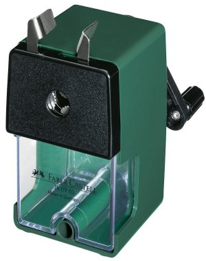
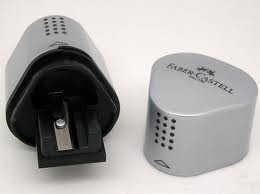
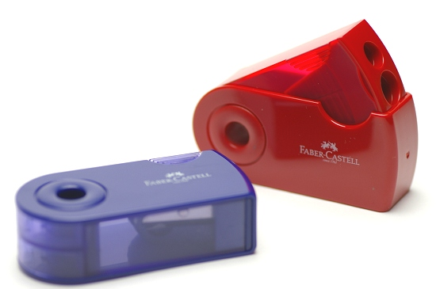

Faber Castell Rotary Pencil Sharpener
Product Description:
This traditional pencil sharpener from Faber Castell comes with a desk clamp and a large receptacle for catching all the pencil shavings.
The Faber Castell Pencil Sharpener Machine clamps the pencil firmly and will sharpen all round, and triangular pencils up to 12 mm in .

Faber-Castell Grip Pencil Sharpener
Product Description: A companion Sharpener for the Faber-Castell Grip pencil. This stunning triangular shaped pencil sharpener with the trademark black dot pattern makes a perfect companion for the Faber-Castell Grip pencil. A functional and attractive sharpener that will grace any desk. This has to be one of the best pencil sharpeners we have seen - definitely the best looking.

FABER-CASTELL Ferber Castile pencil sharpener
Product Description:A brand name: Ferber Castile
An item name: Pencil sharpener (2 hole types)
The diameter of correspondence pencil: 8mm .10mm
A correspondence pencil shape: It is supported a triangular pencil and a colored pencil a circle, hexagon
Size: 70x33x20mm

.gif)